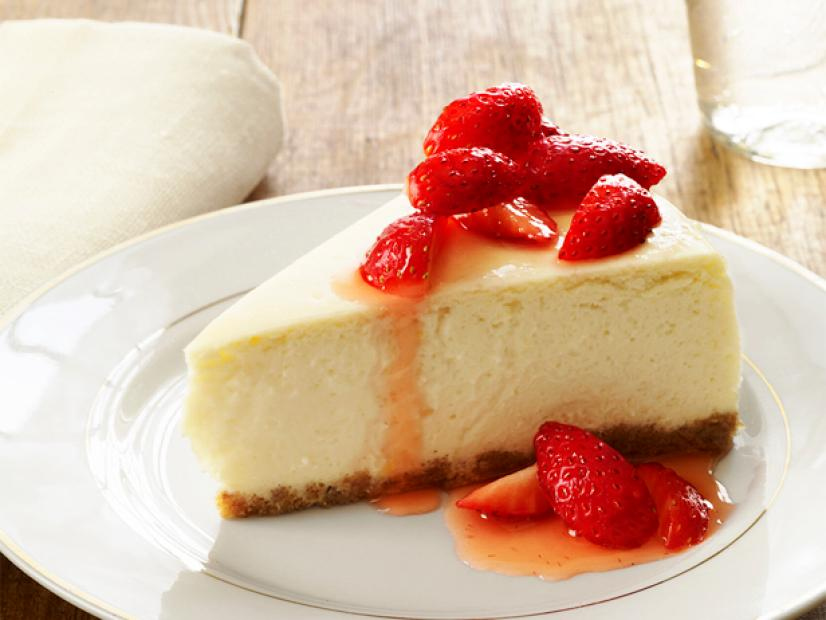

HELLO READER
I HAVE PLACED TWO DIFFERENT CHEESECAKE RECEPIES ON THIS WEBSITE FOR YOUR ENJOYMENT
The Cheesecakes are:
- New York Stlye Cheescake
- Oreo Cheesecake
Some of the common ingredients you will need are:
- Cream Cheese
- Sugar
- All purpose flower
- Heavy cream
- Eggs
Maybe if you practice you will be able to make cheescakes that look like mine

recepies page